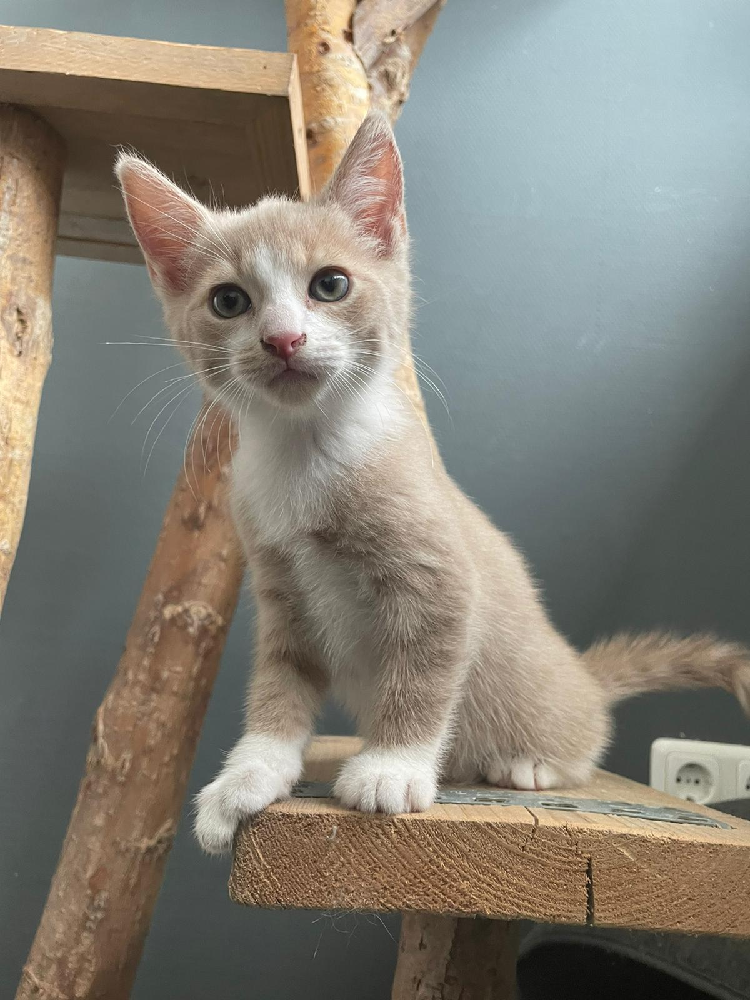

Op deze pagina staat een stukje geschreven over alle huisdieren (katten) die
ik en mn ouders hebben gehad. Van toen ik een baby was toe nu heb ik altijd katten
om mij heen gehad. In totaal heb ik (als ik goed tel) zeven katten als huisdier gehad, waarvan
we nu twee hebben (Maui en Snoes). Hier onder lees je meer over de rest van de katjes.
Vroeger
Sinds dat ik een klein meisje was hadden ik en mn ouders altijd een kat (of meerdere).
Toen ik nog een baby was hadden mijn ouders twee katten, Telma en Louise. Telma en Louise waren zusjes
van elkaar. Later kwam Stimpie er ook bij en hadden mijn ouder voor even drie katten.
Later ging Louise naar een vriend van mijn ouders en hadden wij Telma en Louise. Daarna gingen mijn ouders
(samen met mij) verhuizen. Na Telma en Louise kregen we Noedels en Pepina. We hadden ze opgehaald in het asiel.
Daar zeiden ze dat ze zusje waren. We vonden het zielig om maar eentje mee te nemen dus besloten mijn ouders om ze allebei
te adopteren. Noedels en Pepina waren al best wel oud toen we ze geadopteerd hadden dus hadden we een paar jaar later Maui.
We hadden Maui geadopteerd van een vriendin van mij die een nestje met kittens had gekregen. Maui was een van de laatste kittens
over uit het nestje en echt een schatje. Een paar jaar nadat we Maui geadopteerd hadden was hij nog als enige over. Toen
besloten we om voor de verandering nog een katertje erbij te nemen, namelijk Caramel. Caramel had een heel ander
karakter dan de meeste katers en poezen die we hebben gehad. Hij was heel nieuwschierig en was voor niet veel dingen bang
(ook niet voor auto's). Maui was na een paar jaar weer alleen. Na Caramel besloten we toch maar weer om een poesje erbij te nemen.
Dat werd uiteindelijk Snoes. Het was lang zoeken voor een kitten maar we zijn heel blij met Snoesje.
Caramel

Telma, Louise en Stimpie
Dit zijn Telma, Louise en Stimpie
moet nog fotos van vinden